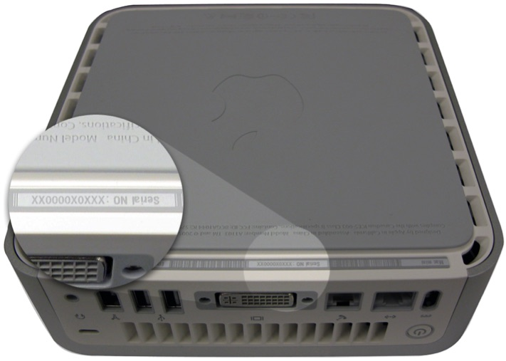

Conecta el cable de corriente y vuelve a encender la computadora
¿Hay luz eléctrica en el sitio donde esta la computadora?
¿La computadora muestra algo en pantalla?
¿El cable de video está conectado?
Conecta el cable de vídeo
Conecte un monitor distinto e intente nuevamente
¿La computadora muestra el escitorio?
Debe enviar el equipo a una tienda autorizada por Apple para reparar su
computadora
Desenchufa todos los cables y conectores de tu iMac. Luego, voltéala.

El número de serie y el número ID de Ethernet con códigos de barras están en una etiqueta situada en el
borde de la carcasa inferior de la computadora (abajo).
En la superficie de la computadora
Puedes encontrar el número de serie en la etiqueta de configuración del modelo, ubicada en la parte
posterior de la computadora, justo debajo de los puertos de video.
Todo Bien
Debe enviar el equipo a una tienda autorizada por Apple para reparar su
computadora